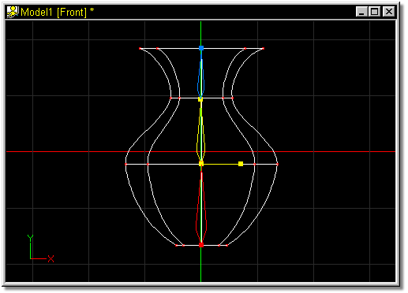
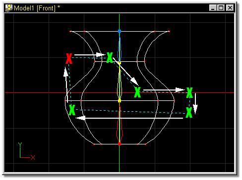
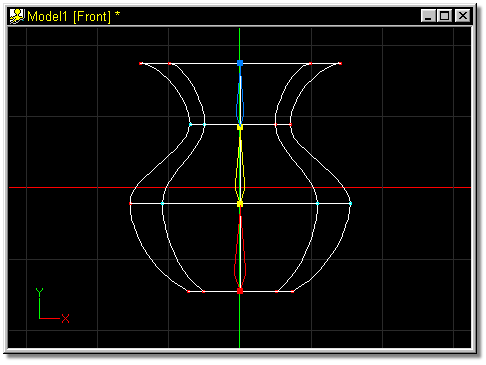

The Lasso Mode enables you to associate control points with a bone by drawing a freehand outline around an area.
To use the lasso, click the bone you wish to group points for, or select it in the Project Workspace by clicking on it. Click the Lasso Mode button, then click inside the appropriate window. A line will follow the mouse from the last point, and every time the mouse is clicked, a new lasso line will form. Enclose the control points to be added to the group, then click the mouse over the starting point of the lasso. All interior control points will turn the color of the bone they are associated with.
After clicking the Lasso Mode button, creating a lasso around additional control points with the right mouse button will add the enclosed points to the current bones group.
The default keyboard shortcut key for Lasso Mode is <Shift>+G.

To associate a group of control points with a bone, select the bone by clicking on it in either the Bone window, or in the Project Workspace (the handles will turn yellow). In Figure 1, the center bone was selected.

Figure 1
Click the Lasso button on the Tool Panel, then point in the appropriate window near one of the targeted control points and click the mouse (the Red X). Move the mouse in the direction of the white arrow (a dashed line the color of the selected bone will follow), and click to group the desired control points (Green Xs). Once the lasso contains all of the targeted control points, click back on the beginning of the lasso (the Red X) to complete the group.

Figure 2
In the resulting group, the grouped control points will turn the color of the selected bone.

Figure 3
Related Topics:
Add
Delete
Attach
Detach
Group